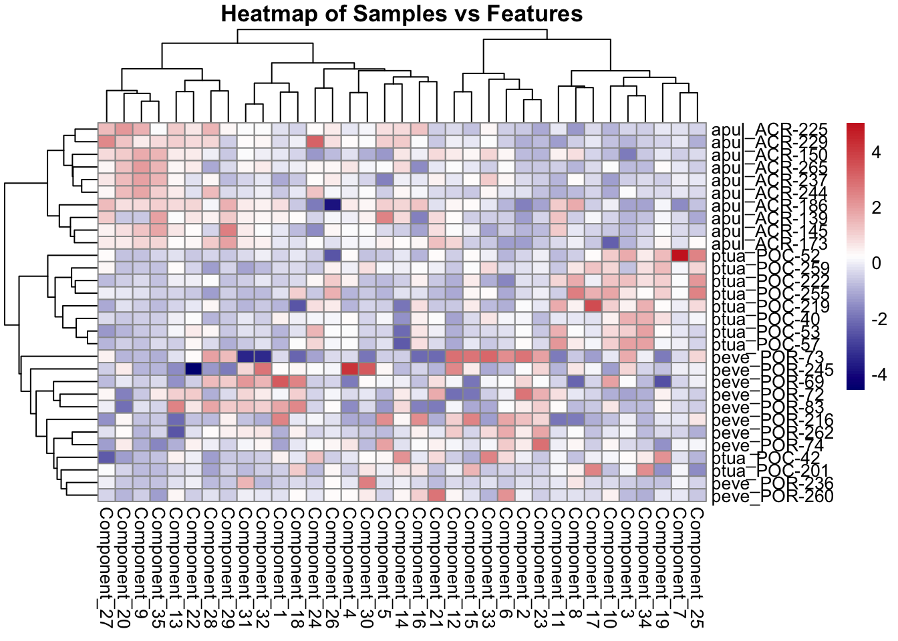
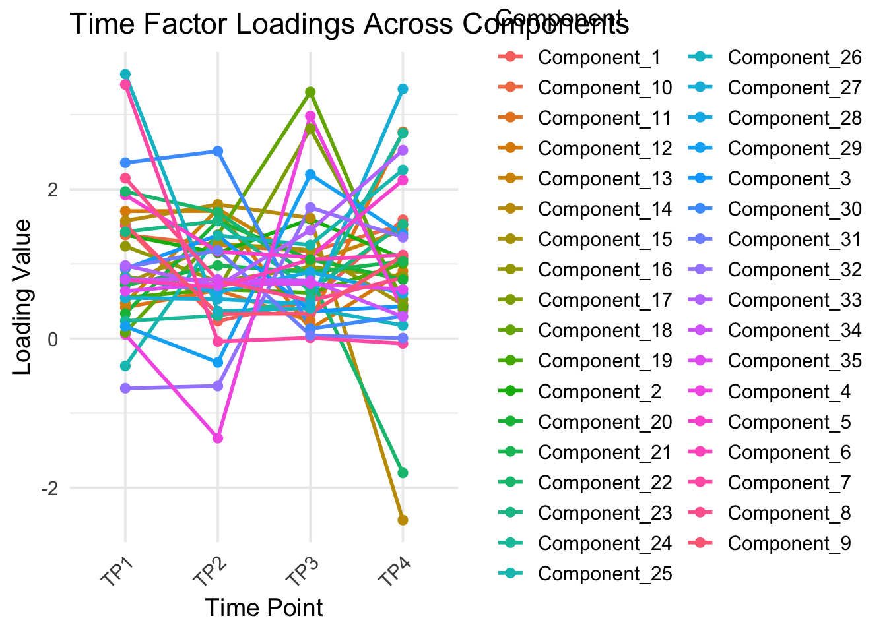
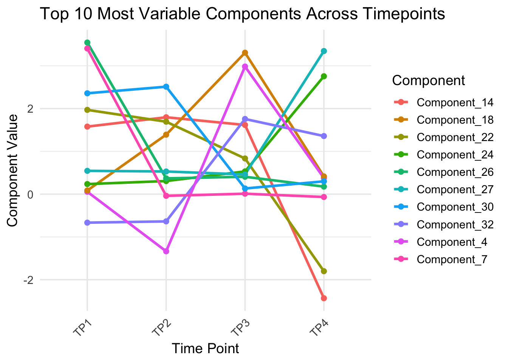
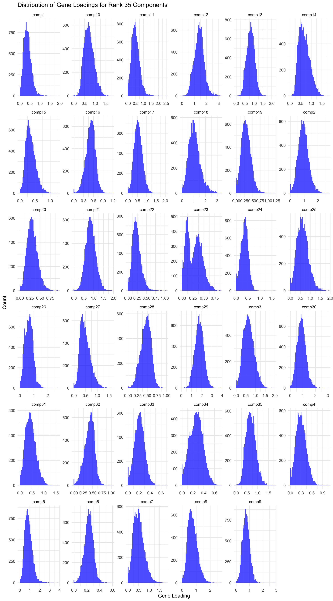
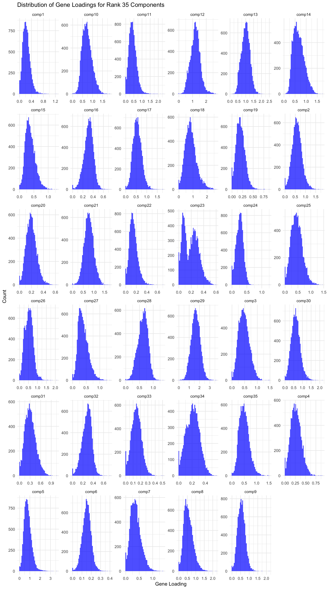
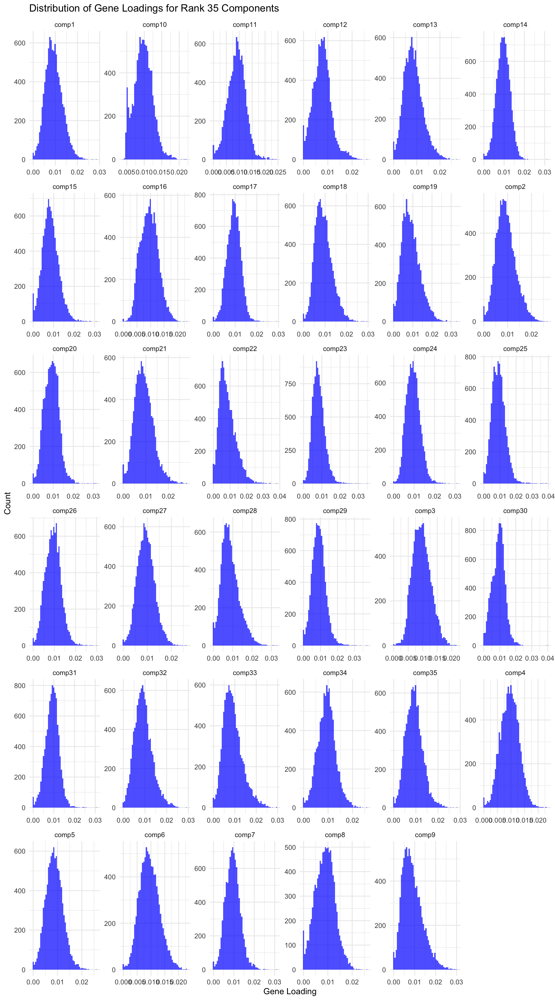
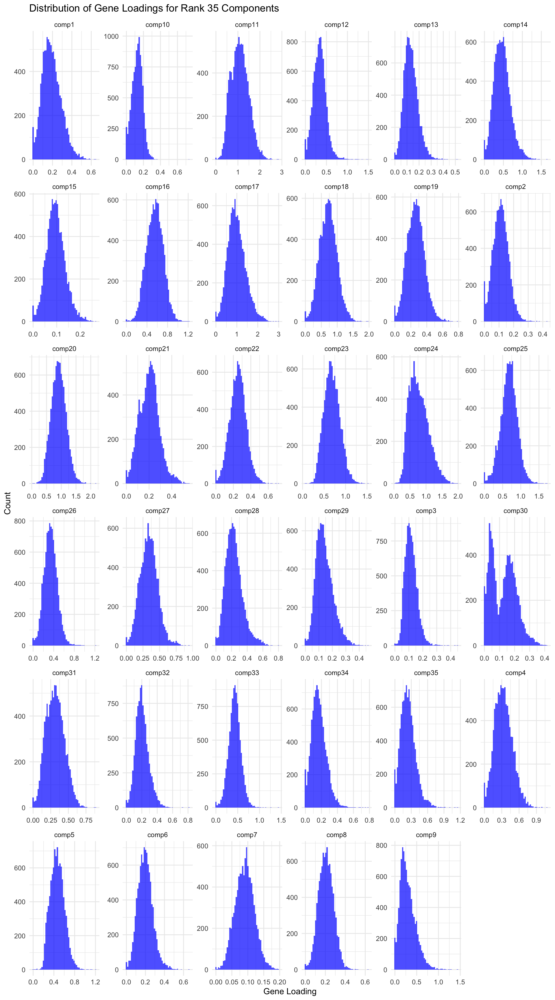

# Path to your CSV filesample_csv <-read.csv("https://gannet.fish.washington.edu/v1_web/owlshell/bu-github/timeseries_molecular/M-multi-species/output/50-tensor-alternative/barnacle_factors/sample_factors.csv",check.names =FALSE)# Replace column namescolnames(sample_csv) <-c("Sample", paste0("Component_", 1:(ncol(sample_csv)-1)))
# Load required librarieslibrary(readr)library(pheatmap)# Make the first column row namesdf_mat <- sample_csv |>column_to_rownames(var =colnames(sample_csv)[1]) |>as.matrix()# Optional: scale rows or columns for better contrastdf_scaled <-scale(df_mat)# Plot heatmappheatmap(df_scaled,color =colorRampPalette(c("navy","white","firebrick3"))(100),clustering_method ="ward.D2",show_rownames =TRUE,show_colnames =TRUE,main ="Heatmap of Samples vs Features")

library(tidyverse)# Pivot to long format for plottingdf_long <- time_csv %>%pivot_longer(cols =starts_with("Component_"),names_to ="Component",values_to ="Value" )# Line plotggplot(df_long, aes(x = Time_ID, y = Value, group = Component, color = Component)) +geom_line(linewidth =1) +geom_point(size =2) +theme_minimal(base_size =14) +theme(axis.text.x =element_text(angle =45, hjust =1),legend.position ="right" ) +labs(title ="Time Factor Loadings Across Components",x ="Time Point",y ="Loading Value" )

library(tidyverse)# Compute variance of each component across timepointsvar_components <- time_csv %>%pivot_longer(cols =starts_with("Component_"),names_to ="Component",values_to ="Value") %>%group_by(Component) %>%summarise(Variance =var(Value, na.rm =TRUE)) %>%arrange(desc(Variance))# Select top 10 most variable componentstop10_components <- var_components %>%slice_max(Variance, n =10) %>%pull(Component)# Prepare data for plottingtime_csv_long <- time_csv %>%pivot_longer(cols =starts_with("Component_"),names_to ="Component",values_to ="Value") %>%filter(Component %in% top10_components)# Line plotggplot(time_csv_long, aes(x = Time_ID, y = Value, group = Component, color = Component)) +geom_line(linewidth =1.2) +geom_point(size =2) +theme_minimal(base_size =14) +theme(axis.text.x =element_text(angle =45, hjust =1)) +labs(title ="Top 10 Most Variable Components Across Timepoints",x ="Time Point",y ="Component Value" )

library(tidyverse)# ---- USER INPUT ----# Pick the component you want to plot (e.g., "Component_5")selected_component <-"Component_5"# ---------------------# Convert to long formatdf_long <- time_csv %>%pivot_longer(cols =starts_with("Component_"),names_to ="Component",values_to ="Value" )# Check that the chosen component existsif (!(selected_component %in%unique(df_long$Component))) {stop(paste("Component", selected_component, "not found in data!"))}# Filter for the selected componentdf_sel <- df_long %>%filter(Component == selected_component)# Plot single component across timepointsggplot(df_sel, aes(x = Time_ID, y = Value, group =1)) +geom_line(linewidth =1.2, color ="steelblue") +geom_point(size =3, color ="firebrick") +theme_minimal(base_size =14) +theme(axis.text.x =element_text(angle =45, hjust =1)) +labs(title =paste0(selected_component, " Across Timepoints"),x ="Time Point",y ="Loading Value" )
# Load data gene_factors <-read_csv("https://gannet.fish.washington.edu/v1_web/owlshell/bu-github/timeseries_molecular/M-multi-species/output/40-rank35-optimization/lambda_gene_0.00/barnacle_factors/gene_factors.csv")#edit so columns names are shifted 1 to the leftcolnames(gene_factors) <-c("gene", paste0("comp", 1:(ncol(gene_factors)-1)))#code to create histogram of gene_factors:library(ggplot2)library(tidyr)# Reshape data to long format gene_factors_long <- gene_factors %>%pivot_longer(cols =-1, names_to ="component", values_to ="loading")# Plot histogramggplot(gene_factors_long, aes(x = loading)) +geom_histogram(bins =50, fill ="blue", alpha =0.7) +facet_wrap(~ component, scales ="free") +theme_minimal() +labs(title ="Distribution of Gene Loadings for Rank 35 Components",x ="Gene Loading",y ="Count")
# Load data gene_factors <-read_csv("https://gannet.fish.washington.edu/v1_web/owlshell/bu-github/timeseries_molecular/M-multi-species/output/40-rank35-optimization/lambda_gene_0.1/barnacle_factors/gene_factors.csv")#edit so columns names are shifted 1 to the leftcolnames(gene_factors) <-c("gene", paste0("comp", 1:(ncol(gene_factors)-1)))#code to create histogram of gene_factors:library(ggplot2)library(tidyr)# Reshape data to long format gene_factors_long <- gene_factors %>%pivot_longer(cols =-1, names_to ="component", values_to ="loading")# Plot histogramggplot(gene_factors_long, aes(x = loading)) +geom_histogram(bins =50, fill ="blue", alpha =0.7) +facet_wrap(~ component, scales ="free") +theme_minimal() +labs(title ="Distribution of Gene Loadings for Rank 35 Components",x ="Gene Loading",y ="Count")

# Load data gene_factors <-read_csv("https://gannet.fish.washington.edu/v1_web/owlshell/bu-github/timeseries_molecular/M-multi-species/output/40-rank35-optimization/lambda_gene_0.2/barnacle_factors/gene_factors.csv")#edit so columns names are shifted 1 to the leftcolnames(gene_factors) <-c("gene", paste0("comp", 1:(ncol(gene_factors)-1)))#code to create histogram of gene_factors:library(ggplot2)library(tidyr)# Reshape data to long format gene_factors_long <- gene_factors %>%pivot_longer(cols =-1, names_to ="component", values_to ="loading")# Plot histogramggplot(gene_factors_long, aes(x = loading)) +geom_histogram(bins =50, fill ="blue", alpha =0.7) +facet_wrap(~ component, scales ="free") +theme_minimal() +labs(title ="Distribution of Gene Loadings for Rank 35 Components",x ="Gene Loading",y ="Count")

# Load data gene_factors <-read_csv("https://gannet.fish.washington.edu/v1_web/owlshell/bu-github/timeseries_molecular/M-multi-species/output/40-rank35-optimization/lambda_gene_0.4/barnacle_factors/gene_factors.csv")#edit so columns names are shifted 1 to the leftcolnames(gene_factors) <-c("gene", paste0("comp", 1:(ncol(gene_factors)-1)))#code to create histogram of gene_factors:library(ggplot2)library(tidyr)# Reshape data to long format gene_factors_long <- gene_factors %>%pivot_longer(cols =-1, names_to ="component", values_to ="loading")# Plot histogramggplot(gene_factors_long, aes(x = loading)) +geom_histogram(bins =50, fill ="blue", alpha =0.7) +facet_wrap(~ component, scales ="free") +theme_minimal() +labs(title ="Distribution of Gene Loadings for Rank 35 Components",x ="Gene Loading",y ="Count")
# Load data gene_factors <-read_csv("https://gannet.fish.washington.edu/v1_web/owlshell/bu-github/timeseries_molecular/M-multi-species/output/40-rank35-optimization/lambda_gene_0.8/barnacle_factors/gene_factors.csv")#edit so columns names are shifted 1 to the leftcolnames(gene_factors) <-c("gene", paste0("comp", 1:(ncol(gene_factors)-1)))#code to create histogram of gene_factors:library(ggplot2)library(tidyr)# Reshape data to long format gene_factors_long <- gene_factors %>%pivot_longer(cols =-1, names_to ="component", values_to ="loading")# Plot histogramggplot(gene_factors_long, aes(x = loading)) +geom_histogram(bins =50, fill ="blue", alpha =0.7) +facet_wrap(~ component, scales ="free") +theme_minimal() +labs(title ="Distribution of Gene Loadings for Rank 35 Components",x ="Gene Loading",y ="Count")
# Load data gene_factors <-read_csv("https://gannet.fish.washington.edu/v1_web/owlshell/bu-github/timeseries_molecular/M-multi-species/output/40-rank35-optimization/lambda_gene_1.0/barnacle_factors/gene_factors.csv")#edit so columns names are shifted 1 to the leftcolnames(gene_factors) <-c("gene", paste0("comp", 1:(ncol(gene_factors)-1)))#code to create histogram of gene_factors:library(ggplot2)library(tidyr)# Reshape data to long format gene_factors_long <- gene_factors %>%pivot_longer(cols =-1, names_to ="component", values_to ="loading")# Plot histogramggplot(gene_factors_long, aes(x = loading)) +geom_histogram(bins =50, fill ="blue", alpha =0.7) +facet_wrap(~ component, scales ="free") +theme_minimal() +labs(title ="Distribution of Gene Loadings for Rank 35 Components",x ="Gene Loading",y ="Count")

# Load data gene_factors <-read_csv("https://gannet.fish.washington.edu/v1_web/owlshell/bu-github/timeseries_molecular/M-multi-species/output/40-rank35-optimization/lambda_gene_10/barnacle_factors/gene_factors.csv")#edit so columns names are shifted 1 to the leftcolnames(gene_factors) <-c("gene", paste0("comp", 1:(ncol(gene_factors)-1)))#code to create histogram of gene_factors:library(ggplot2)library(tidyr)# Reshape data to long format gene_factors_long <- gene_factors %>%pivot_longer(cols =-1, names_to ="component", values_to ="loading")# Plot histogramggplot(gene_factors_long, aes(x = loading)) +geom_histogram(bins =50, fill ="blue", alpha =0.7) +facet_wrap(~ component, scales ="free") +theme_minimal() +labs(title ="Distribution of Gene Loadings for Rank 35 Components",x ="Gene Loading",y ="Count")
# Load data gene_factors <-read_csv("https://gannet.fish.washington.edu/v1_web/owlshell/bu-github/timeseries_molecular/M-multi-species/output/40-rank35-optimization/lambda_gene_40/barnacle_factors/gene_factors.csv")#edit so columns names are shifted 1 to the leftcolnames(gene_factors) <-c("gene", paste0("comp", 1:(ncol(gene_factors)-1)))#code to create histogram of gene_factors:library(ggplot2)library(tidyr)# Reshape data to long format gene_factors_long <- gene_factors %>%pivot_longer(cols =-1, names_to ="component", values_to ="loading")# Plot histogramggplot(gene_factors_long, aes(x = loading)) +geom_histogram(bins =50, fill ="blue", alpha =0.7) +facet_wrap(~ component, scales ="free") +theme_minimal() +labs(title ="Distribution of Gene Loadings for Rank 35 Components",x ="Gene Loading",y ="Count")
# Load data gene_factors <-read_csv("https://gannet.fish.washington.edu/v1_web/owlshell/bu-github/timeseries_molecular/M-multi-species/output/40-rank35-optimization/lambda_gene_100/barnacle_factors/gene_factors.csv")#edit so columns names are shifted 1 to the leftcolnames(gene_factors) <-c("gene", paste0("comp", 1:(ncol(gene_factors)-1)))#code to create histogram of gene_factors:library(ggplot2)library(tidyr)# Reshape data to long format gene_factors_long <- gene_factors %>%pivot_longer(cols =-1, names_to ="component", values_to ="loading")# Plot histogramggplot(gene_factors_long, aes(x = loading)) +geom_histogram(bins =50, fill ="blue", alpha =0.7) +facet_wrap(~ component, scales ="free") +theme_minimal() +labs(title ="Distribution of Gene Loadings for Rank 35 Components",x ="Gene Loading",y ="Count")

# Load data gene_factors <-read_csv("https://gannet.fish.washington.edu/v1_web/owlshell/bu-github/timeseries_molecular/M-multi-species/output/40-rank35-optimization/lambda_gene_1000/barnacle_factors/gene_factors.csv")#edit so columns names are shifted 1 to the leftcolnames(gene_factors) <-c("gene", paste0("comp", 1:(ncol(gene_factors)-1)))#code to create histogram of gene_factors:library(ggplot2)library(tidyr)# Reshape data to long format gene_factors_long <- gene_factors %>%pivot_longer(cols =-1, names_to ="component", values_to ="loading")# Plot histogramggplot(gene_factors_long, aes(x = loading)) +geom_histogram(bins =50, fill ="blue", alpha =0.7) +facet_wrap(~ component, scales ="free") +theme_minimal() +labs(title ="Distribution of Gene Loadings for Rank 35 Components",x ="Gene Loading",y ="Count")
Source Code
---title: "Barnacle"description: "final push"categories: [e5, coral]#citation: date: 11-29-2025image: http://gannet.fish.washington.edu/seashell/snaps/Monosnap_Image_2025-11-30_08-27-36.png # finding a good imageauthor: - name: Steven Roberts url: orcid: 0000-0001-8302-1138 affiliation: Professor, UW - School of Aquatic and Fishery Sciences affiliation-url: https://robertslab.info #url: # self-defineddraft: false # setting this to `true` will prevent your post from appearing on your listing page until you're ready!format: html: code-fold: FALSE code-tools: true code-copy: true highlight-style: github code-overflow: wrap#runtime: shiny---## Trying to build alternative tensor``` python#!/usr/bin/env python3"""Alternative tensor construction: (genes × timepoints × samples)Each sample becomes a separate slice instead of grouping by species."""import argparseimport jsonimport osfrom datetime import datetimefrom typing import Dict, List, Tupleimport numpy as npimport pandas as pdimport matplotlib.pyplot as pltfrom barnacle.decomposition import SparseCPdef read_normalized_csv(path: str) -> pd.DataFrame: df = pd.read_csv(path)if'group_id'notin df.columns:raiseValueError(f"Expected 'group_id' column in {path}") df = df.set_index('group_id')return dfdef parse_sample_timepoint(column_name: str) -> Tuple[str, str, int]: tp_index = column_name.rfind('-TP')if tp_index ==-1:raiseValueError(f"Expected TP# token at end of column: {column_name}") time_token = column_name[tp_index +1:]ifnot time_token.startswith('TP'):raiseValueError(f"Expected TP# token at end of column: {column_name}")try: tp =int(time_token.replace('TP', ''))exceptExceptionas exc:raiseValueError(f"Failed to parse timepoint from {column_name}") from exc sample_id = column_name[:tp_index] sample_prefix = sample_id.split('-')[0] species_map = {'ACR': 'apul', 'POR': 'peve', 'POC': 'ptua'}if sample_prefix notin species_map:raiseValueError(f"Unknown species prefix in column: {column_name}") species = species_map[sample_prefix]return species, sample_id, tpdef build_tensor_by_sample( df: pd.DataFrame, expected_timepoints: List[int],) -> Tuple[np.ndarray, List[str], Dict[int, Dict[str, str]], List[str]]:""" Build tensor with shape (genes, timepoints, samples). Each unique sample becomes a slice, with timepoints as rows. """ common_genes =sorted(list(df.index))# Collect all unique samples across all species sample_data = {} # {sample_id: {species: str, columns: {tp: col_name}}}for col in df.columns:try: species, sample_id, tp = parse_sample_timepoint(col)if tp in expected_timepoints:if sample_id notin sample_data: sample_data[sample_id] = {'species': species,'columns': {} } sample_data[sample_id]['columns'][tp] = colexceptValueError:continue# Sort samples by species, then by sample_id sorted_samples =sorted( sample_data.keys(), key=lambda sid: (sample_data[sid]['species'], sid) )# Build sample labels and metadata sample_labels: List[str] = [] sample_metadata: Dict[int, Dict[str, str]] = {}for idx, sample_id inenumerate(sorted_samples): species = sample_data[sample_id]['species'] sample_labels.append(f"{species}_{sample_id}") sample_metadata[idx] = {'species': species,'sample_id': sample_id, } n_genes =len(common_genes) n_time =len(expected_timepoints) n_samples =len(sorted_samples)if n_samples ==0:raiseValueError("No samples with valid timepoints found")# Tensor shape: (genes, timepoints, samples) tensor = np.empty((n_genes, n_time, n_samples), dtype=float) tensor[:] = np.nan# Fill tensorfor s_idx, sample_id inenumerate(sorted_samples): columns = sample_data[sample_id]['columns']for t_idx, tp inenumerate(expected_timepoints): col = columns.get(tp)if col isNone:continue values = df.loc[common_genes, col].to_numpy(dtype=float) tensor[:, t_idx, s_idx] = values# Replace NaNs with zeros tensor = np.nan_to_num(tensor, nan=0.0)return tensor, sample_labels, sample_metadata, common_genesdef run_sparse_cp( tensor: np.ndarray, rank: int, lambda_gene: float, lambda_time: float, lambda_sample: float, max_iter: int, tol: float, seed: int,):""" Note: lambda order now matches tensor dimensions: [gene, time, sample] """ model = SparseCP( rank=rank, lambdas=[lambda_gene, lambda_time, lambda_sample], nonneg_modes=[0], n_initializations=3, random_state=seed, n_iter_max=max_iter, tol=tol, ) decomposition = model.fit_transform(tensor, verbose=1)return model, decompositiondef save_outputs( output_dir: str, tensor: np.ndarray, sample_labels: List[str], sample_metadata: Dict[int, Dict[str, str]], genes: List[str], model, decomposition,): os.makedirs(output_dir, exist_ok=True) factors_dir = os.path.join(output_dir, 'barnacle_factors') figs_dir = os.path.join(output_dir, 'figures') os.makedirs(factors_dir, exist_ok=True) os.makedirs(figs_dir, exist_ok=True) np.save(os.path.join(output_dir, 'multiomics_tensor.npy'), tensor)# Extract factors: order is [genes, timepoints, samples] gene_factors = pd.DataFrame(decomposition.factors[0], index=genes) time_factors = pd.DataFrame(decomposition.factors[1], index=[f'TP{t}'for t inrange(1, tensor.shape[1] +1)]) sample_factors = pd.DataFrame(decomposition.factors[2], index=sample_labels) gene_factors.to_csv(os.path.join(factors_dir, 'gene_factors.csv')) time_factors.to_csv(os.path.join(factors_dir, 'time_factors.csv')) sample_factors.to_csv(os.path.join(factors_dir, 'sample_factors.csv'))# Compute component weights weights_attr =getattr(decomposition, 'weights', None)if weights_attr isnotNone: weights = np.asarray(weights_attr).astype(float).ravel()if np.allclose(weights, weights[0]) iflen(weights) >0elseTrue: weights =Noneelse: weights =Noneif weights isNone: gene_norms = np.linalg.norm(gene_factors.values, axis=0) time_norms = np.linalg.norm(time_factors.values, axis=0) sample_norms = np.linalg.norm(sample_factors.values, axis=0) weights = gene_norms * time_norms * sample_norms pd.DataFrame({'weight': weights}).to_csv( os.path.join(factors_dir, 'component_weights.csv'), index=False)# Sample mapping mapping_rows = []for idx, label inenumerate(sample_labels): mapping_rows.append({'sample_index': idx,'label': label,'species': sample_metadata[idx]['species'],'sample_id': sample_metadata[idx]['sample_id'], }) pd.DataFrame(mapping_rows).to_csv( os.path.join(factors_dir, 'sample_mapping.csv'), index=False)# Metadata raw_loss =getattr(model, 'loss_', None)if raw_loss isNone: final_loss =Noneelse:try:ifisinstance(raw_loss, (list, tuple, np.ndarray)) andlen(raw_loss) >0: final_loss =float(raw_loss[-1])else: final_loss =float(raw_loss)exceptException: final_loss =None metadata = {'timestamp': datetime.utcnow().isoformat() +'Z','tensor_shape': list(map(int, tensor.shape)),'tensor_structure': '(genes, timepoints, samples)','n_components': int(gene_factors.shape[1]),'model_converged': bool(getattr(model, 'converged_', False)),'final_loss': final_loss, }withopen(os.path.join(factors_dir, 'metadata.json'), 'w') as fh: json.dump(metadata, fh, indent=2)# Figures plt.figure(figsize=(6, 4)) plt.bar(np.arange(len(weights)), weights) plt.xlabel('Component') plt.ylabel('Weight') plt.title('Component Weights') plt.tight_layout() plt.savefig(os.path.join(figs_dir, 'component_weights.png'), dpi=200) plt.close()# Time loadings across components plt.figure(figsize=(7, 4))for k inrange(time_factors.shape[1]): plt.plot(range(1, time_factors.shape[0] +1), time_factors.iloc[:, k], marker='o', label=f'C{k+1}') plt.xticks(range(1, time_factors.shape[0] +1)) plt.xlabel('Timepoint') plt.ylabel('Loading') plt.title('Time Loadings by Component') plt.legend(ncols=2, fontsize=8) plt.tight_layout() plt.savefig(os.path.join(figs_dir, 'time_loadings.png'), dpi=200) plt.close()# Sample loadings colored by species fig, ax = plt.subplots(figsize=(10, 6)) species_colors = {'apul': 'C0', 'peve': 'C1', 'ptua': 'C2'}for k inrange(sample_factors.shape[1]):for idx, label inenumerate(sample_labels): species = sample_metadata[idx]['species'] ax.scatter(k, sample_factors.iloc[idx, k], c=species_colors[species], alpha=0.6, s=50) ax.set_xlabel('Component') ax.set_ylabel('Sample Loading') ax.set_title('Sample Loadings by Component and Species')# Legendfrom matplotlib.patches import Patch legend_elements = [Patch(facecolor=species_colors[sp], label=sp) for sp in ['apul', 'peve', 'ptua']] ax.legend(handles=legend_elements) plt.tight_layout() plt.savefig(os.path.join(figs_dir, 'sample_loadings.png'), dpi=200) plt.close()def main() ->None: parser = argparse.ArgumentParser( description='Build tensor (genes × timepoints × samples) and run Barnacle SparseCP') parser.add_argument('--input-file', required=True, help='Path to merged vst_counts_matrix.csv file') parser.add_argument('--output-dir', required=True, help='Output directory for results') parser.add_argument('--rank', type=int, default=5) parser.add_argument('--lambda-gene', type=float, default=0.1) parser.add_argument('--lambda-time', type=float, default=0.05) parser.add_argument('--lambda-sample', type=float, default=0.1) parser.add_argument('--max-iter', type=int, default=1000) parser.add_argument('--tol', type=float, default=1e-5) parser.add_argument('--seed', type=int, default=42) args = parser.parse_args()ifnot os.path.exists(args.input_file):raiseFileNotFoundError(f"Input file not found: {args.input_file}") df = read_normalized_csv(args.input_file) tensor, sample_labels, sample_metadata, genes = build_tensor_by_sample( df, expected_timepoints=[1, 2, 3, 4])print(f"\nTensor shape: {tensor.shape}")print(f" Genes: {tensor.shape[0]}")print(f" Timepoints: {tensor.shape[1]}")print(f" Samples: {tensor.shape[2]}") model, decomposition = run_sparse_cp( tensor=tensor, rank=args.rank, lambda_gene=args.lambda_gene, lambda_time=args.lambda_time, lambda_sample=args.lambda_sample, max_iter=args.max_iter, tol=args.tol, seed=args.seed, ) save_outputs(args.output_dir, tensor, sample_labels, sample_metadata, genes, model, decomposition)if__name__=='__main__': main()```### Output```{r}library(readr)library(pheatmap)library(tidyverse)``````{r}gene_csv <-read.csv("https://gannet.fish.washington.edu/v1_web/owlshell/bu-github/timeseries_molecular/M-multi-species/output/50-tensor-alternative/barnacle_factors/gene_factors.csv",check.names =FALSE)# Replace column namescolnames(gene_csv) <-c("OG_ID", paste0("Component_", 1:(ncol(gene_csv)-1)))``````{r}time_csv <-read.csv("https://gannet.fish.washington.edu/v1_web/owlshell/bu-github/timeseries_molecular/M-multi-species/output/50-tensor-alternative/barnacle_factors/time_factors.csv",check.names =FALSE)# Replace column namescolnames(time_csv) <-c("Time_ID", paste0("Component_", 1:(ncol(time_csv)-1)))``````{r}# Path to your CSV filesample_csv <-read.csv("https://gannet.fish.washington.edu/v1_web/owlshell/bu-github/timeseries_molecular/M-multi-species/output/50-tensor-alternative/barnacle_factors/sample_factors.csv",check.names =FALSE)# Replace column namescolnames(sample_csv) <-c("Sample", paste0("Component_", 1:(ncol(sample_csv)-1)))``````{r}# Load required librarieslibrary(readr)library(pheatmap)# Make the first column row namesdf_mat <- sample_csv |>column_to_rownames(var =colnames(sample_csv)[1]) |>as.matrix()# Optional: scale rows or columns for better contrastdf_scaled <-scale(df_mat)# Plot heatmappheatmap(df_scaled,color =colorRampPalette(c("navy","white","firebrick3"))(100),clustering_method ="ward.D2",show_rownames =TRUE,show_colnames =TRUE,main ="Heatmap of Samples vs Features")``````{r}library(tidyverse)# Pivot to long format for plottingdf_long <- time_csv %>%pivot_longer(cols =starts_with("Component_"),names_to ="Component",values_to ="Value" )# Line plotggplot(df_long, aes(x = Time_ID, y = Value, group = Component, color = Component)) +geom_line(linewidth =1) +geom_point(size =2) +theme_minimal(base_size =14) +theme(axis.text.x =element_text(angle =45, hjust =1),legend.position ="right" ) +labs(title ="Time Factor Loadings Across Components",x ="Time Point",y ="Loading Value" )``````{r}library(tidyverse)# Compute variance of each component across timepointsvar_components <- time_csv %>%pivot_longer(cols =starts_with("Component_"),names_to ="Component",values_to ="Value") %>%group_by(Component) %>%summarise(Variance =var(Value, na.rm =TRUE)) %>%arrange(desc(Variance))# Select top 10 most variable componentstop10_components <- var_components %>%slice_max(Variance, n =10) %>%pull(Component)# Prepare data for plottingtime_csv_long <- time_csv %>%pivot_longer(cols =starts_with("Component_"),names_to ="Component",values_to ="Value") %>%filter(Component %in% top10_components)# Line plotggplot(time_csv_long, aes(x = Time_ID, y = Value, group = Component, color = Component)) +geom_line(linewidth =1.2) +geom_point(size =2) +theme_minimal(base_size =14) +theme(axis.text.x =element_text(angle =45, hjust =1)) +labs(title ="Top 10 Most Variable Components Across Timepoints",x ="Time Point",y ="Component Value" )``````{r}library(tidyverse)# ---- USER INPUT ----# Pick the component you want to plot (e.g., "Component_5")selected_component <-"Component_5"# ---------------------# Convert to long formatdf_long <- time_csv %>%pivot_longer(cols =starts_with("Component_"),names_to ="Component",values_to ="Value" )# Check that the chosen component existsif (!(selected_component %in%unique(df_long$Component))) {stop(paste("Component", selected_component, "not found in data!"))}# Filter for the selected componentdf_sel <- df_long %>%filter(Component == selected_component)# Plot single component across timepointsggplot(df_sel, aes(x = Time_ID, y = Value, group =1)) +geom_line(linewidth =1.2, color ="steelblue") +geom_point(size =3, color ="firebrick") +theme_minimal(base_size =14) +theme(axis.text.x =element_text(angle =45, hjust =1)) +labs(title =paste0(selected_component, " Across Timepoints"),x ="Time Point",y ="Loading Value" )``````{r}library(tidyverse)library(pheatmap)# Convert to matrix (remove OG_ID column)mat <- gene_csv %>%column_to_rownames(var ="OG_ID") %>%as.matrix()# Optional: scale rows (genes) so colors represent relative loadings per genepheatmap( mat,scale ="row",color =colorRampPalette(c("navy", "white", "firebrick3"))(100),clustering_method ="ward.D2",show_rownames =FALSE,main ="Gene Factor Loadings (All Components)")``````{r}library(tidyverse)library(pheatmap)# Convert to numeric matrixmat <- gene_csv %>%column_to_rownames(var ="OG_ID") %>%as.matrix()# Heatmap of actual (unscaled) valuespheatmap( mat,scale ="none", # do not scalecolor =colorRampPalette(c("navy", "white", "firebrick3"))(200),clustering_method ="ward.D2",show_rownames =FALSE,main ="Gene Factor Loadings (Actual Values)")```# More lamda testing``` bashLAMBDAS_GENE="0.00 0.1 0.2 0.4 0.8 1.0 10 40 100 1000"LAMBDA_SAMPLE=0.1LAMBDA_TIME=0.05RANK=35mkdir-p ../output/40-rank35-optimizationOUTDIR_BASE=../output/40-rank35-optimizationfor LG in$LAMBDAS_GENE;doOUTDIR=${OUTDIR_BASE}/lambda_gene_${LG}mkdir-p"$OUTDIR"uv run python ../scripts/14.1-barnacle/build_tensor_and_run.py \--input-file ../output/14-pca-orthologs/vst_counts_matrix.csv \--output-dir"$OUTDIR"\--rank$RANK\--lambda-gene$LG\--lambda-sample$LAMBDA_SAMPLE\--lambda-time$LAMBDA_TIME\--max-iter 1000 \--tol 1e-5 \--seed 92done``````{r, echo=TRUE, warning=FALSE, message=FALSE, fig.width=10, fig.height=18}# Load data gene_factors <-read_csv("https://gannet.fish.washington.edu/v1_web/owlshell/bu-github/timeseries_molecular/M-multi-species/output/40-rank35-optimization/lambda_gene_0.00/barnacle_factors/gene_factors.csv")#edit so columns names are shifted 1 to the leftcolnames(gene_factors) <-c("gene", paste0("comp", 1:(ncol(gene_factors)-1)))#code to create histogram of gene_factors:library(ggplot2)library(tidyr)# Reshape data to long format gene_factors_long <- gene_factors %>%pivot_longer(cols =-1, names_to ="component", values_to ="loading")# Plot histogramggplot(gene_factors_long, aes(x = loading)) +geom_histogram(bins =50, fill ="blue", alpha =0.7) +facet_wrap(~ component, scales ="free") +theme_minimal() +labs(title ="Distribution of Gene Loadings for Rank 35 Components",x ="Gene Loading",y ="Count")``````{r, echo=TRUE, warning=FALSE, message=FALSE, fig.width=10, fig.height=18}# Load data gene_factors <-read_csv("https://gannet.fish.washington.edu/v1_web/owlshell/bu-github/timeseries_molecular/M-multi-species/output/40-rank35-optimization/lambda_gene_0.1/barnacle_factors/gene_factors.csv")#edit so columns names are shifted 1 to the leftcolnames(gene_factors) <-c("gene", paste0("comp", 1:(ncol(gene_factors)-1)))#code to create histogram of gene_factors:library(ggplot2)library(tidyr)# Reshape data to long format gene_factors_long <- gene_factors %>%pivot_longer(cols =-1, names_to ="component", values_to ="loading")# Plot histogramggplot(gene_factors_long, aes(x = loading)) +geom_histogram(bins =50, fill ="blue", alpha =0.7) +facet_wrap(~ component, scales ="free") +theme_minimal() +labs(title ="Distribution of Gene Loadings for Rank 35 Components",x ="Gene Loading",y ="Count")``````{r, echo=TRUE, warning=FALSE, message=FALSE, fig.width=10, fig.height=18}# Load data gene_factors <-read_csv("https://gannet.fish.washington.edu/v1_web/owlshell/bu-github/timeseries_molecular/M-multi-species/output/40-rank35-optimization/lambda_gene_0.2/barnacle_factors/gene_factors.csv")#edit so columns names are shifted 1 to the leftcolnames(gene_factors) <-c("gene", paste0("comp", 1:(ncol(gene_factors)-1)))#code to create histogram of gene_factors:library(ggplot2)library(tidyr)# Reshape data to long format gene_factors_long <- gene_factors %>%pivot_longer(cols =-1, names_to ="component", values_to ="loading")# Plot histogramggplot(gene_factors_long, aes(x = loading)) +geom_histogram(bins =50, fill ="blue", alpha =0.7) +facet_wrap(~ component, scales ="free") +theme_minimal() +labs(title ="Distribution of Gene Loadings for Rank 35 Components",x ="Gene Loading",y ="Count")``````{r, echo=TRUE, warning=FALSE, message=FALSE, fig.width=10, fig.height=18}# Load data gene_factors <-read_csv("https://gannet.fish.washington.edu/v1_web/owlshell/bu-github/timeseries_molecular/M-multi-species/output/40-rank35-optimization/lambda_gene_0.4/barnacle_factors/gene_factors.csv")#edit so columns names are shifted 1 to the leftcolnames(gene_factors) <-c("gene", paste0("comp", 1:(ncol(gene_factors)-1)))#code to create histogram of gene_factors:library(ggplot2)library(tidyr)# Reshape data to long format gene_factors_long <- gene_factors %>%pivot_longer(cols =-1, names_to ="component", values_to ="loading")# Plot histogramggplot(gene_factors_long, aes(x = loading)) +geom_histogram(bins =50, fill ="blue", alpha =0.7) +facet_wrap(~ component, scales ="free") +theme_minimal() +labs(title ="Distribution of Gene Loadings for Rank 35 Components",x ="Gene Loading",y ="Count")``````{r, echo=TRUE, warning=FALSE, message=FALSE, fig.width=10, fig.height=18}# Load data gene_factors <-read_csv("https://gannet.fish.washington.edu/v1_web/owlshell/bu-github/timeseries_molecular/M-multi-species/output/40-rank35-optimization/lambda_gene_0.8/barnacle_factors/gene_factors.csv")#edit so columns names are shifted 1 to the leftcolnames(gene_factors) <-c("gene", paste0("comp", 1:(ncol(gene_factors)-1)))#code to create histogram of gene_factors:library(ggplot2)library(tidyr)# Reshape data to long format gene_factors_long <- gene_factors %>%pivot_longer(cols =-1, names_to ="component", values_to ="loading")# Plot histogramggplot(gene_factors_long, aes(x = loading)) +geom_histogram(bins =50, fill ="blue", alpha =0.7) +facet_wrap(~ component, scales ="free") +theme_minimal() +labs(title ="Distribution of Gene Loadings for Rank 35 Components",x ="Gene Loading",y ="Count")``````{r, echo=TRUE, warning=FALSE, message=FALSE, fig.width=10, fig.height=18}# Load data gene_factors <-read_csv("https://gannet.fish.washington.edu/v1_web/owlshell/bu-github/timeseries_molecular/M-multi-species/output/40-rank35-optimization/lambda_gene_1.0/barnacle_factors/gene_factors.csv")#edit so columns names are shifted 1 to the leftcolnames(gene_factors) <-c("gene", paste0("comp", 1:(ncol(gene_factors)-1)))#code to create histogram of gene_factors:library(ggplot2)library(tidyr)# Reshape data to long format gene_factors_long <- gene_factors %>%pivot_longer(cols =-1, names_to ="component", values_to ="loading")# Plot histogramggplot(gene_factors_long, aes(x = loading)) +geom_histogram(bins =50, fill ="blue", alpha =0.7) +facet_wrap(~ component, scales ="free") +theme_minimal() +labs(title ="Distribution of Gene Loadings for Rank 35 Components",x ="Gene Loading",y ="Count")``````{r, echo=TRUE, warning=FALSE, message=FALSE, fig.width=10, fig.height=18}# Load data gene_factors <-read_csv("https://gannet.fish.washington.edu/v1_web/owlshell/bu-github/timeseries_molecular/M-multi-species/output/40-rank35-optimization/lambda_gene_10/barnacle_factors/gene_factors.csv")#edit so columns names are shifted 1 to the leftcolnames(gene_factors) <-c("gene", paste0("comp", 1:(ncol(gene_factors)-1)))#code to create histogram of gene_factors:library(ggplot2)library(tidyr)# Reshape data to long format gene_factors_long <- gene_factors %>%pivot_longer(cols =-1, names_to ="component", values_to ="loading")# Plot histogramggplot(gene_factors_long, aes(x = loading)) +geom_histogram(bins =50, fill ="blue", alpha =0.7) +facet_wrap(~ component, scales ="free") +theme_minimal() +labs(title ="Distribution of Gene Loadings for Rank 35 Components",x ="Gene Loading",y ="Count")``````{r, echo=TRUE, warning=FALSE, message=FALSE, fig.width=10, fig.height=18}# Load data gene_factors <-read_csv("https://gannet.fish.washington.edu/v1_web/owlshell/bu-github/timeseries_molecular/M-multi-species/output/40-rank35-optimization/lambda_gene_40/barnacle_factors/gene_factors.csv")#edit so columns names are shifted 1 to the leftcolnames(gene_factors) <-c("gene", paste0("comp", 1:(ncol(gene_factors)-1)))#code to create histogram of gene_factors:library(ggplot2)library(tidyr)# Reshape data to long format gene_factors_long <- gene_factors %>%pivot_longer(cols =-1, names_to ="component", values_to ="loading")# Plot histogramggplot(gene_factors_long, aes(x = loading)) +geom_histogram(bins =50, fill ="blue", alpha =0.7) +facet_wrap(~ component, scales ="free") +theme_minimal() +labs(title ="Distribution of Gene Loadings for Rank 35 Components",x ="Gene Loading",y ="Count")``````{r, echo=TRUE, warning=FALSE, message=FALSE, fig.width=10, fig.height=18}# Load data gene_factors <-read_csv("https://gannet.fish.washington.edu/v1_web/owlshell/bu-github/timeseries_molecular/M-multi-species/output/40-rank35-optimization/lambda_gene_100/barnacle_factors/gene_factors.csv")#edit so columns names are shifted 1 to the leftcolnames(gene_factors) <-c("gene", paste0("comp", 1:(ncol(gene_factors)-1)))#code to create histogram of gene_factors:library(ggplot2)library(tidyr)# Reshape data to long format gene_factors_long <- gene_factors %>%pivot_longer(cols =-1, names_to ="component", values_to ="loading")# Plot histogramggplot(gene_factors_long, aes(x = loading)) +geom_histogram(bins =50, fill ="blue", alpha =0.7) +facet_wrap(~ component, scales ="free") +theme_minimal() +labs(title ="Distribution of Gene Loadings for Rank 35 Components",x ="Gene Loading",y ="Count")``````{r, echo=TRUE, warning=FALSE, message=FALSE, fig.width=10, fig.height=18}# Load data gene_factors <-read_csv("https://gannet.fish.washington.edu/v1_web/owlshell/bu-github/timeseries_molecular/M-multi-species/output/40-rank35-optimization/lambda_gene_1000/barnacle_factors/gene_factors.csv")#edit so columns names are shifted 1 to the leftcolnames(gene_factors) <-c("gene", paste0("comp", 1:(ncol(gene_factors)-1)))#code to create histogram of gene_factors:library(ggplot2)library(tidyr)# Reshape data to long format gene_factors_long <- gene_factors %>%pivot_longer(cols =-1, names_to ="component", values_to ="loading")# Plot histogramggplot(gene_factors_long, aes(x = loading)) +geom_histogram(bins =50, fill ="blue", alpha =0.7) +facet_wrap(~ component, scales ="free") +theme_minimal() +labs(title ="Distribution of Gene Loadings for Rank 35 Components",x ="Gene Loading",y ="Count")```
![]()